ConsentFlow is a full-stack healthcare consent management platform built to give patients genuine ownership over their electronic health records. The system uses a microservices architecture with a dedicated AI service for risk assessment, a gateway API that enforces role-based access, and a blockchain-ready audit trail — ensuring that every consent grant, modification, or revocation is tamper-evident and time-stamped. Providers, administrators, and patients each operate through purpose-built dashboards, while an emergency access protocol allows clinicians to temporarily bypass active consent under strict logging constraints.
The project addresses a real gap in healthcare interoperability: existing systems treat consent as a binary checkbox rather than a dynamic, revocable, patient-controlled permission layer. ConsentFlow models consent as a living document — patients can grant, restrict, and revoke access per provider, per data type, and per time window.
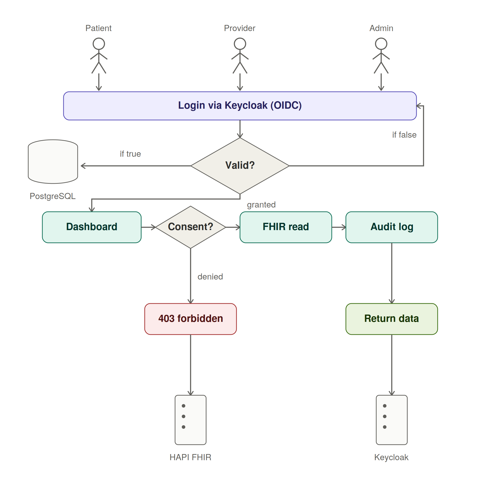
Patients grant or revoke access per-provider, per-data-type, and per-time-window — not a one-time checkbox. Every change is logged with a tamper-evident timestamp.
Four distinct portals — Patient, Provider, Admin, and API Gateway — each enforcing least-privilege access with JWT-backed session tokens and RBAC middleware.
Clinicians can invoke a time-limited emergency bypass under active audit logging. The override window, reason, and provider identity are all immutably recorded.
A dedicated FastAPI microservice assesses consent-request risk in real time — flagging unusual access patterns, bulk data requests, or off-hours provider activity.
Data is structured around FHIR R4 resources, making the platform compatible with existing EHR systems and national health information exchanges.
Every consent lifecycle event is appended to an append-only, cryptographically chained audit log — providing regulators, patients, and auditors with a complete, uneditable history.
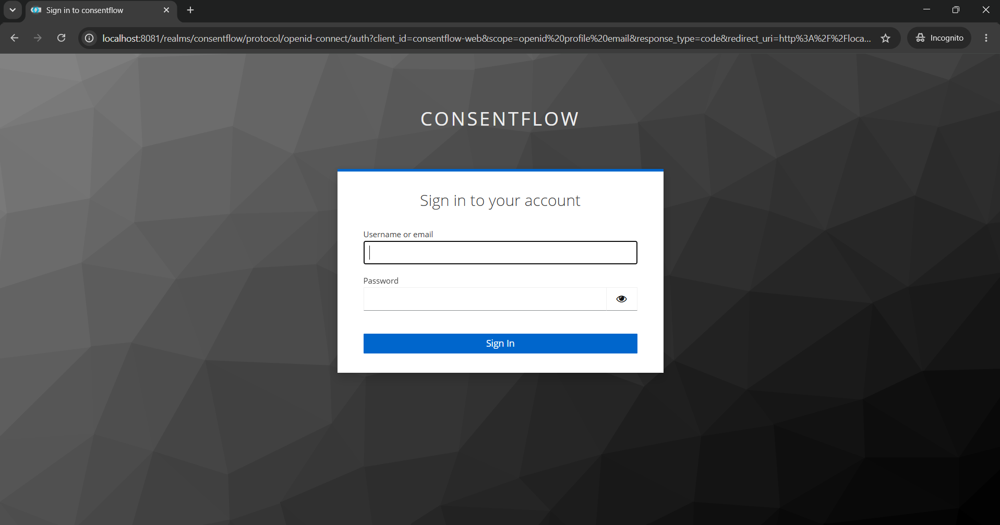
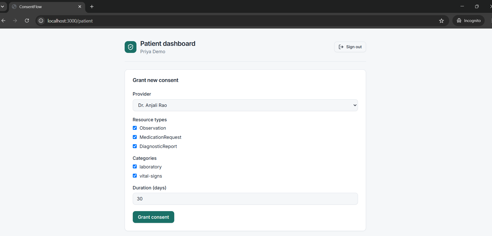
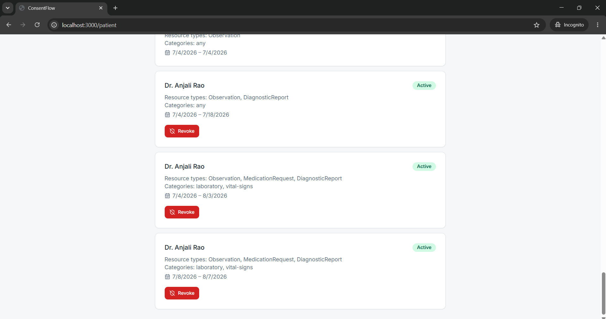
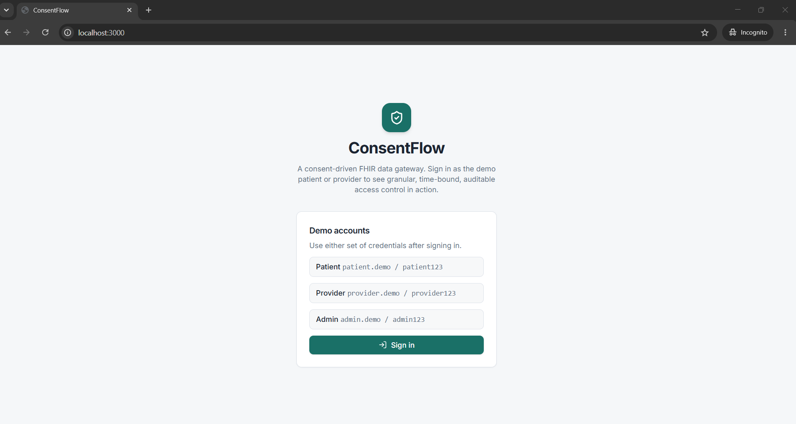
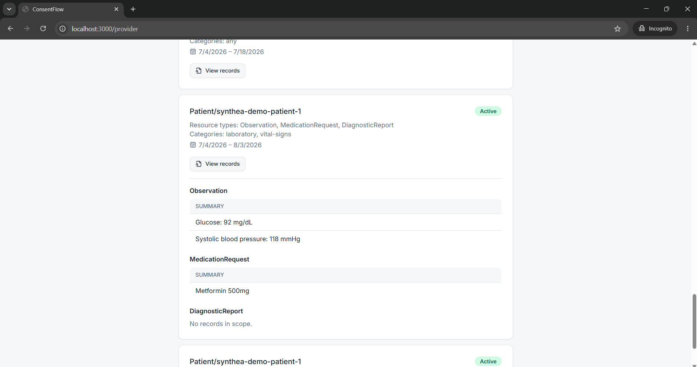
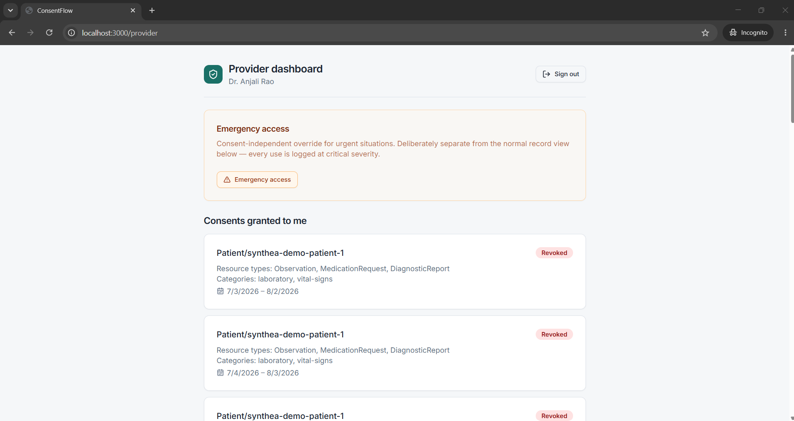
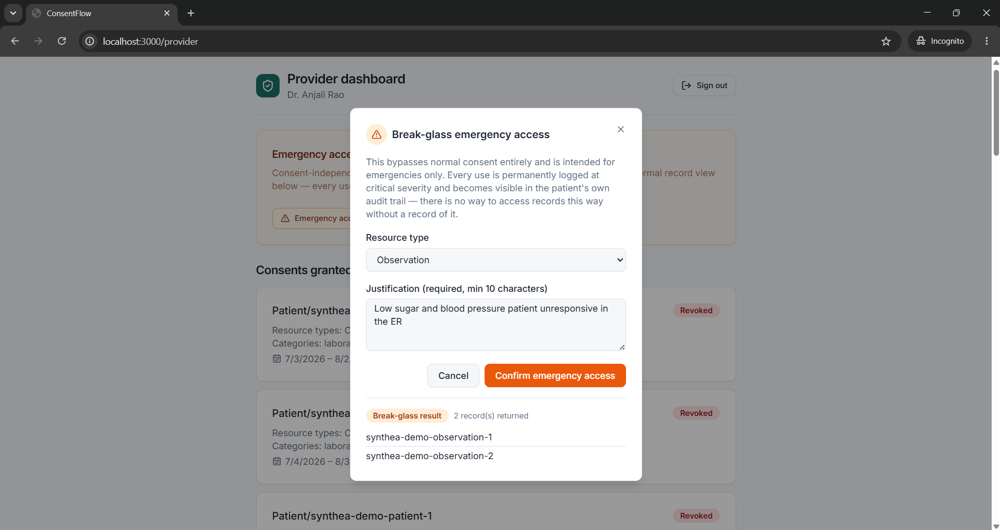
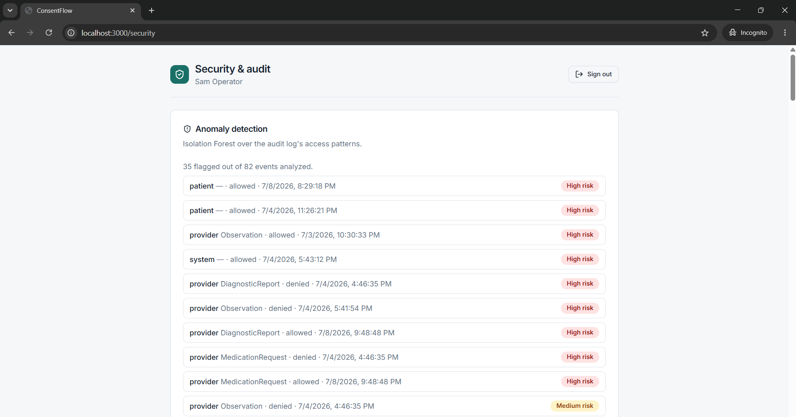
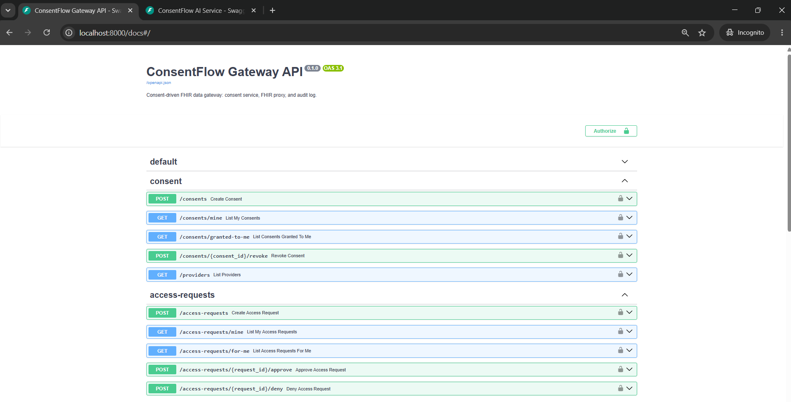
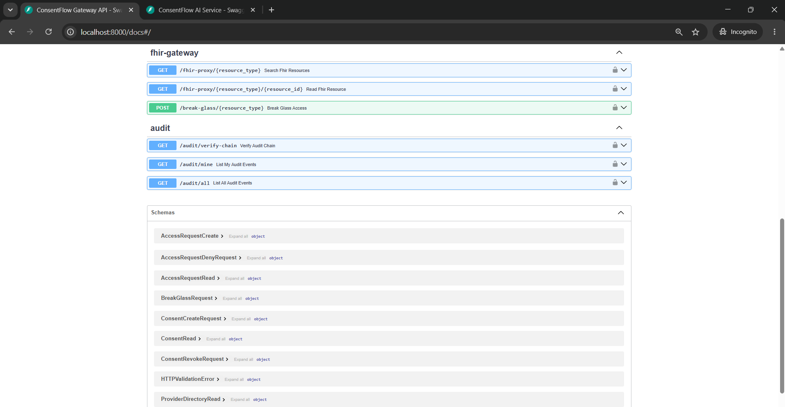
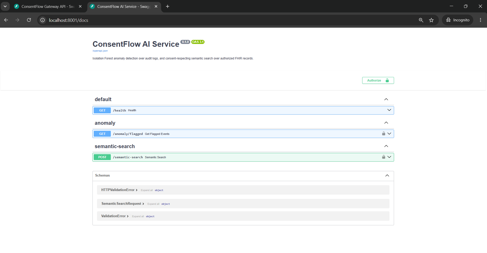